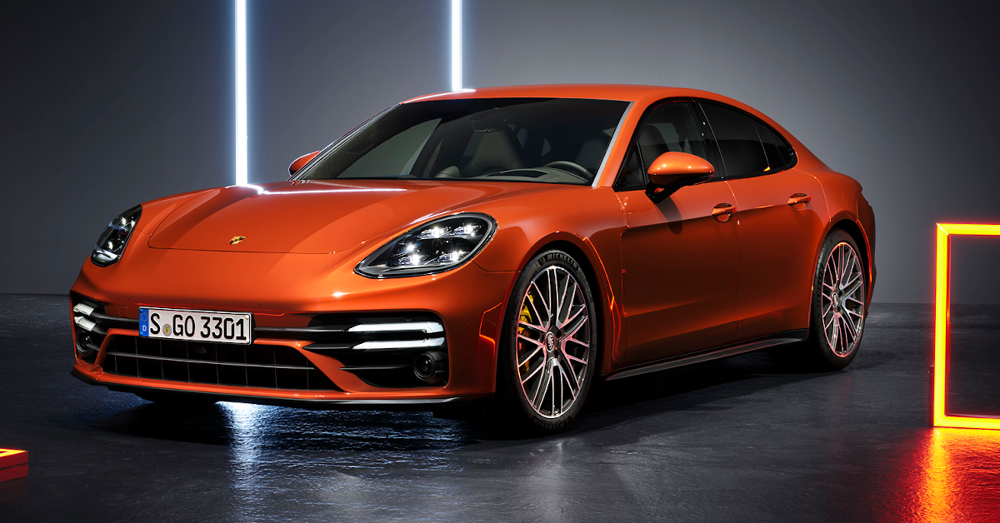
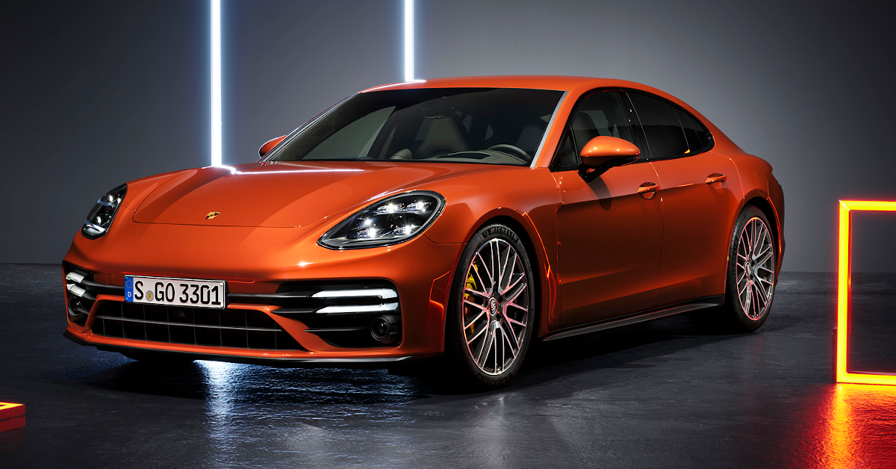
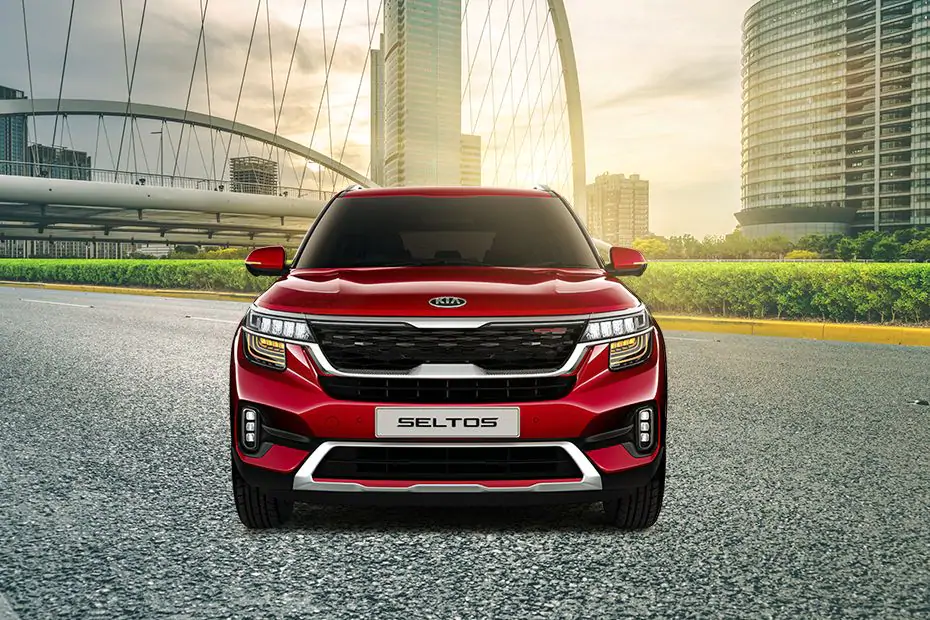
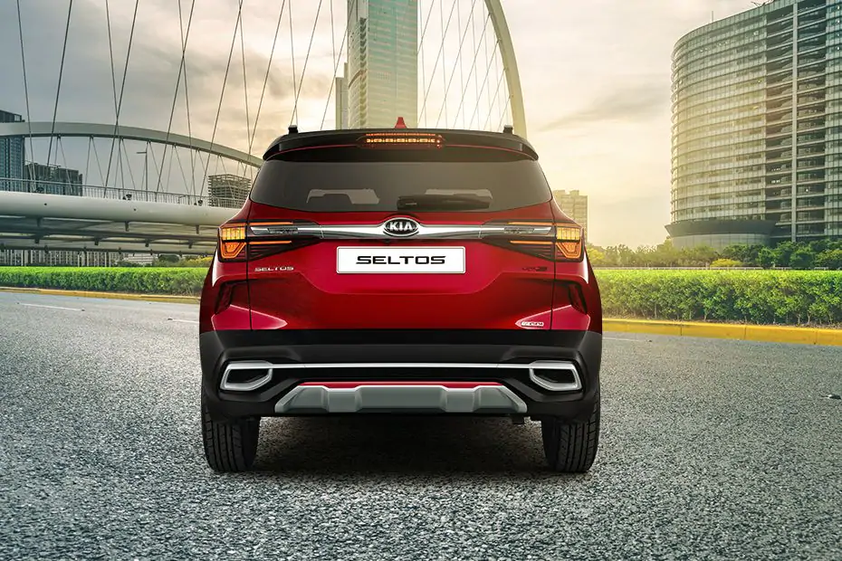
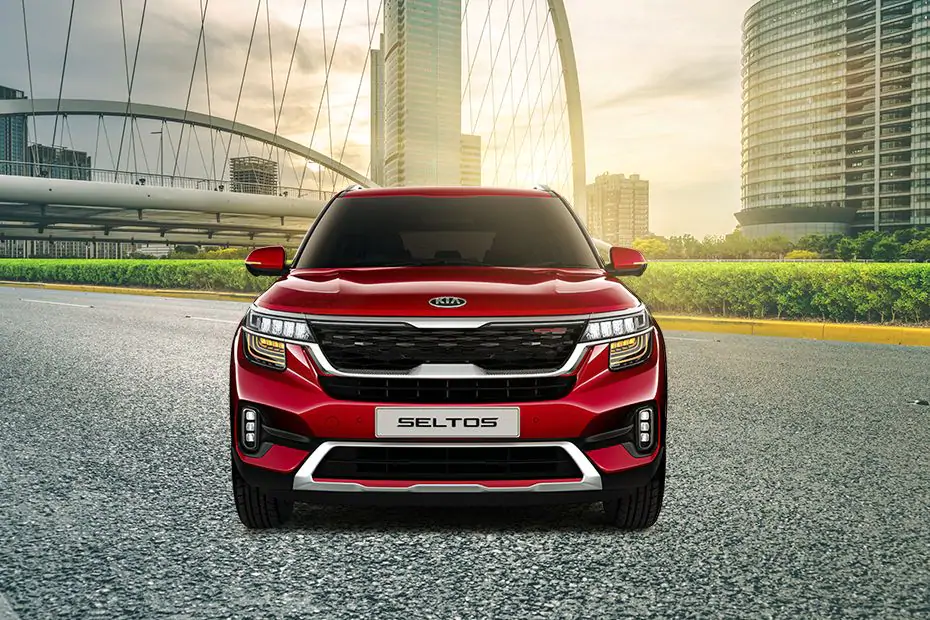
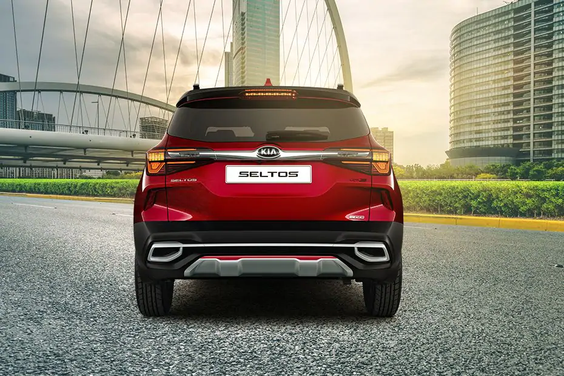

Maruti Suzuki popular Vitara Brezza subcompact SUV, Celerio and Alto hatchbacks are ready to enter into their new generations in the next couple of years. While the new Vitara Brezza and Celerio are reported to hit roads in the second half of this year, the new Alto is likely to arrive in 2022 or 2023. All three models will witness comprehensive design changes and feature and mechanical upgrades.
The range-topping 2021 Hyundai Creta SX (O) trim comes with some exclusive features including an 8-speaker Bose premium sound system, front ventilated seats, powered driver’s seat, leather upholstery, auto dimming inside rear view mirror, a 7.0-inch instrument cluster, six airbags and 17-inch diamond cut alloy wheels. For connectivity purpose, there is a 10.25-inch touchscreen infotainment system.
EV batteries are larger and heavier than those in regular cars and are made up of several hundred individual lithium-ion cells, all of which need dismantling. They contain hazardous materials, and have an inconvenient tendency to explode if disassembled incorrectly.
Additionally, with many states in India going through another round of lockdowns, this adds another major hurdle for carmakers, when it comes to holding new car launches. This deferment also lets them focus their efforts in aiding the current situation caused by the pandemic, wherever they can.
Porsche says this included an average sale of one Panamera every week to the end of March. Sales of its SUVs also grew by 38 percent, compared to the same quarter last year, while demand for its two-door sportscars, the 911, 718 Boxster and Cayman, also showed an increase of 26 percent. It’s the sportscar maker’s best quarterly sales performance in 7 years
 

The Government has announced that cars fitted with automatic lane-keeping systems will be permitted to drive at up to 37mph in a single lane without the driver interacting with it, other than keeping their attention on the road. Automatic lane-keeping makes sure a vehicle stays in its own lane, and controls the speed and braking.
While pricing for the revised Polo is still to be confirmed, we’d expect only a small increase over the outgoing car, which costs from £17,400. Life, Style and R-Line specifications will be offered, with the former the entry point to the range, and the latter (pictured) giving the Polo a sportier look.
Indeed, while you can choose from similarly zero-emission people carriers such as the Peugeot e-Rifter or Mercedes’ own EQV, only the Tesla Model X matches the EQB’s bums-on-seats capacity in the SUV market, and that car is both a lot larger and a lot more expensive. Granted, the EQB’s rearmost seats will be a squeeze for most adults, but you can also fit two child car seats back there.
It has been almost two years since the Seltos was launched in India. The Anniversary Edition arrived last year, and now, we are expecting the new Gravity Edition to launch tomorrow. We hazard this guess because the carmaker sent us a ‘Save the Date’ invite (for tomorrow, of course), and we think it could concern the launch of the Seltos Gravity Edition. South Korea got this edition in 2020.
 

Audi is also working on the e-tron Gran Turismo, which will reportedly act as the “race taxi” in Formula E. Audi Sport has had a good amount of success in Formula E, winning 12 races and clinching the 2017-18 championship. Both Audi and Porsche are marques owned by the Volkswagen Group, and have collaborated on the J1 electric architecture used on the Taycan. This will likely provide the underpinning for any electric high-performance models that come out of Audi in the near future. Less expensive everyday cars, meanwhile, will probably use the “MEB” platform already used by VW and Seat.
Elon Musk however did earn option payouts worth $11 billion based on the goals reached by the company. The shares closed at 4.5% at $704.74, down by more than 20% from its intraday high that the electric carmaker reached in January. Despite the chip shortage that has grievously punched the auto sector, Tesla successfully posted deliveries in the first quarter, however, analysts said that if the shortage continues, the company’s growth would be impacted.
While Maruti usually carries out its scheduled yearly maintenance shutdown in June, the current medical needs of the nation have made the carmaker advance it, and will now be done between May 1 and 9. This isn’t the first time Maruti has come forward to offer its help to the country. At the onset of the pandemic in 2020, the carmaker’s seat manufacturing joint venture, Krishna Maruti, had supplied one million face masks to the Haryana government while Maruti had ramped up production of ventilators and also provided food and water supply to those in need around its manufacturing facilities in Haryana.
It will rival the Citroen C5 Aircross. Prices expected to start from Rs 28 lakh. Due to the current COVID-19 situation, Volkswagen has delayed the launch of the 5-seater Tiguan facelift to June 2021. It was previewed in India in March and was expected to launch in May. The SUV was discontinued back in 2020 as its diesel engine did not comply with the BS6 emission norms.
In related news, Kia will launch the updated Seltos and Sonet (with the new Kia logo) in the first week of May. The South Korean carmaker is also probably working on a Seltos-based three-row SUV to rival the Hyundai Alcazar. The latter will arrive around early 2022. Vehicle Re-registration During Relocation To Get Simpler. Loan Against Car - Get upto ₹25 Lakhs in cash
The draft regulation was published on a government portal Thursday and is open for public comment until May 15. It proposes mandating that any information collected from a car’s external cameras, such as location data or images of buildings or roads, be stored in China.